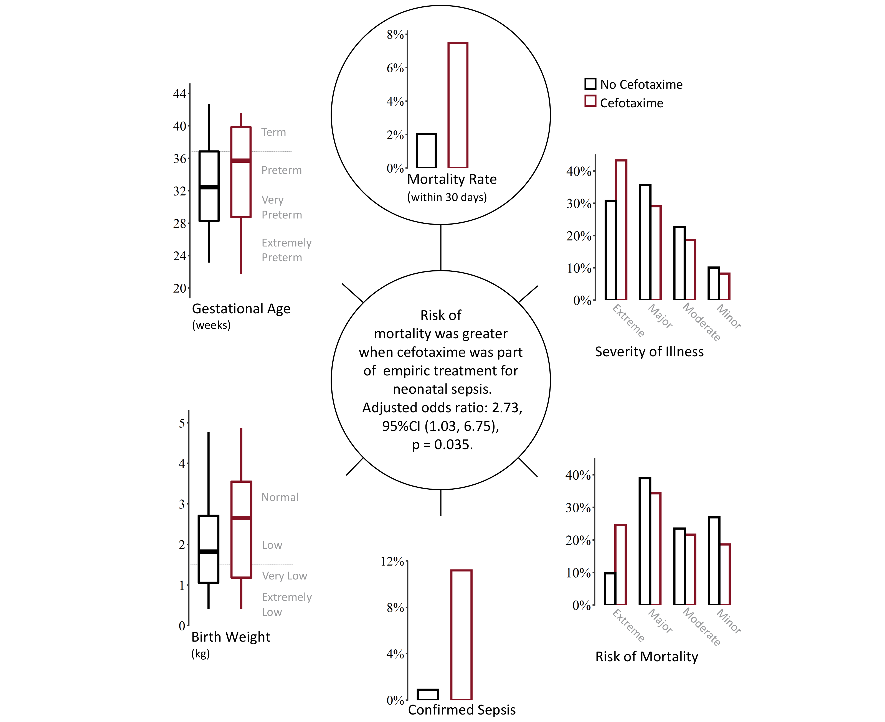

Journal Articles
Wagstaff, J.S., Durrant, R.J., Newman, M.G., Eason, R., Ward, R.M., Sherwin, C.M.T., & Enioutina, E.Y. (2019). Antibiotic treatment of suspected and confirmed neonatal sepsis within 28 days of birth: a retrospective analysis. Frontiers in Pharmacology, 10, 1191. https://doi.org/10.3389/fphar.2019.01191
Becker, S.M., Job, K.M., Lima, K., Forbes, T.J., Wagstaff, J., Tran, N.K., Sherwin, C.M., Nelson, D.S., Johnson, M.D., & Rower, J.E. (2018). Prospective study of serum and ionized magnesium pharmacokinetics in the treatment of children with severe acute asthma. European Journal of Clinical Pharmacology, 75(1), 59-66. https://doi.org/10.1007/s00228-018-2557-7
Technical Reports
Bean, B., Maguire, M., Sun, Y., Wagstaff, J., Al-Rubaye, S.A., Wheeler, J., Jarman, S., & Rogers, M. (2021). The 2020 national snow load study (paper 276). Utah State University, Mathematics and Statistics Faculty Publications. https://doi.org/10.26077/200k-pr86
Software
Wagstaff, J. (2021). remap: regional spatial modeling with continuous borders. The Comprehensive R Archive Network (CRAN). https://github.com/jadonwagstaff/remap
Wagstaff, J. (2018). sboost: machine learning with AdaBoost on decision stumps. The Comprehensive R Archive Network (CRAN). https://github.com/jadonwagstaff/sboost
Abstracts
Wagstaff, J.S., Newman, M., & Enioutina, E.Y. (2019). Empiric treatment of neonatal early-onset sepsis: a retrospective analysis of the University of Utah Hospital cases [Abstract 43]. Clinical Pharmacology in Drug Development, 8(S1), 30. https://doi.org/10.1002/cpdd.724 (poster)
Yellepeddi, V., Wagstaff, J.S., & Constance, J.E. (2019). A physiologically-based pharacokinetic model for intravenous voriconazole in pediatric patients with and without cancer [Abstract 119]. Clinical Pharmacology in Drug Development, 8(S1), 85–86. https://doi.org/10.1002/cpdd.724
Wagstaff, J.S., Eason R., Newman M., Sherwin, C.M., & Enioutina, E.Y. (2018). Characterization and treatments of neonatal late-onset sepsis: a retrospective analysis of the Univ of Utah Hosp cases [Abstract 114]. Clinical Pharmacology in Drug Development, 7(S1), 89–90. https://doi.org/10.1002/cpdd.610 (poster)
Project Highlights
National Snow Load Study
June, 2021

Updating US building codes with new ground snow load maps. Research resulted in a new mapping technique which is implemented in the R package "remap". Maps were accepted for inclusion in ASCE 7-22.
Neonatal Sepsis
October, 2019
An analysis of neonatal sepsis within the University of Utah Hospital system. Exploring the correlation of cefotaxime administration with increased mortality.